Mitos importantes da Mitologia Grega
O mito de Prometeu
A mitologia grega conta que os seres vivos foram criados por dois titãs,
Prometeu e seu irmão Epimeteu. Eles ficaram responsáveis por dar vidas a
animais e seres humanos.
Epimeteu faz os animais e lhes concede vários poderes, como força, agilidade,
capacidade de voar e etc. Mas quando cria os humanos já não tinha mais nenhum
bom atributo para dar a eles.
Assim, conta a situação para Prometeu, que se solidariza com a humanidade
e rouba o fogo sagrado dos deuses para entregá-lo às pessoas. Tal atitude
enfurece Zeus, o mais poderoso dos deuses, que decide castigá-lo de maneira
cruel.
Prometeu é então amarrado no alto do Monte Cáucaso.
Todos os dias uma grande águia lhe visitava para devorar seu fígado.
A noite o órgão se regenerava para que no dia seguinte a ave novamente
pudesse comê-lo.
O titã permaneceu nessa situação por muitas gerações,
até ser libertado pelo herói Heráclito.
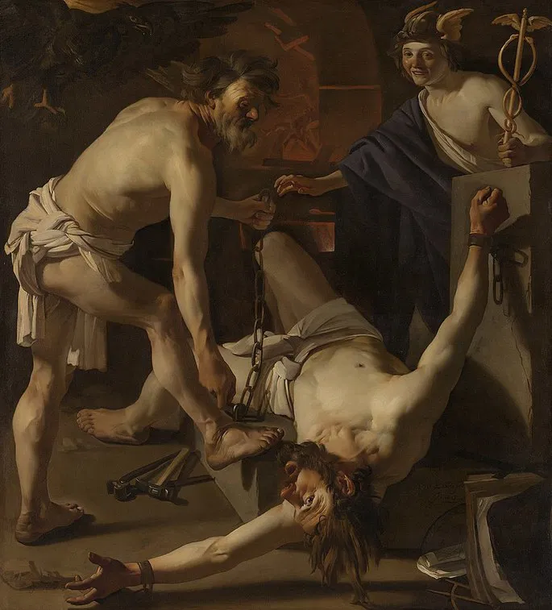
Caixa de Pandora
A caixa de Pandora é uma história que surge como continuação do mito de Prometeu.
Antes de Prometeu ser castigado, ele havia alertado seu irmão, Epimeteu,
a nunca aceitar um presente dos deuses, pois sabia que as divindades
estariam buscando vingança.
Mas Epimeteu não acatou o conselho do irmão e aceitou a bela e jovem Pandora,
uma mulher que havia sido criado pelos deuses com o intuito de castigar a
humanidade por receber o fogo sagrado.
Quando foi entregue a Epimeteu, Pandora também levou uma caixa e a instrução
de nunca abri-la. Mas os deuses ao criá-la, colocaram nela a curiosidade e
desobediência.
Assim, passado um tempo de convívio entre os humanos, Pandora abriu a caixa.
De dentro dela saíram todos os males da humanidade como a tristeza, o sofrimento,
as doenças, a miséria, a inveja e outros sentimentos maléficos. Por fim, a única
coisa que restou na caixa foi a esperança.
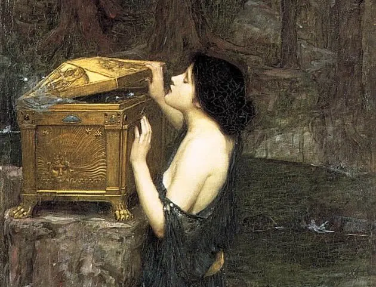
Mito de sísifo
Os gregos acreditavam que Sísifo tinha sido o rei de um território hoje conhecido como Corinto.
Ele teria testemunhado o momento em que uma águia, a mando de Zeus, teria raptado
uma moça chamada Egina, que era filha de Asopo, o deus dos rios.
Pensando em se beneficiar da informação e vendo que Asopo estava desesperado
procurando a filha, Sísifo conta o que viu e pede em troca que a divindade lhe
conceda uma fonte de água em suas terras.
Assim é feito, mas Zeus descobre que havia sido denunciado e decide punir Sísifo,
enviando Tânatos, o deus da morte, para buscá-lo.
Sísifo era um sujeito muito inteligente e presenteia Tânatos com um colar.
O deus aceita o presente, mas, na verdade, fica preso pelo pescoço, afinal o
era uma corrente.
O tempo passa e mais nenhum mortal é levado ao submundo, pois Tânatos estava preso.
Assim, não há mortes na Terra e o deus Ares (deus da guerra) se enfurece. Ele então
liberta Tânatos para finalmente mate Sísifo.
Mais uma vez Sísifo consegue enganar os deuses e escapa da morte, conseguindo viver
até a velhice. Mas, como era mortal, um dia não consegue mais fugir do destino.
Morre e acaba se encontrando novamente com os deuses.
Ele por fim recebe o pior castigo que alguém poderia receber. É condenado a
carregar por toda a eternidade uma enorme pedra ladeira acima. Quando alcançava o topo,
a pedra rolava e, mais uma vez, Sísifo deveria levá-la ao topo, em um trabalho cansativo
e inútil.
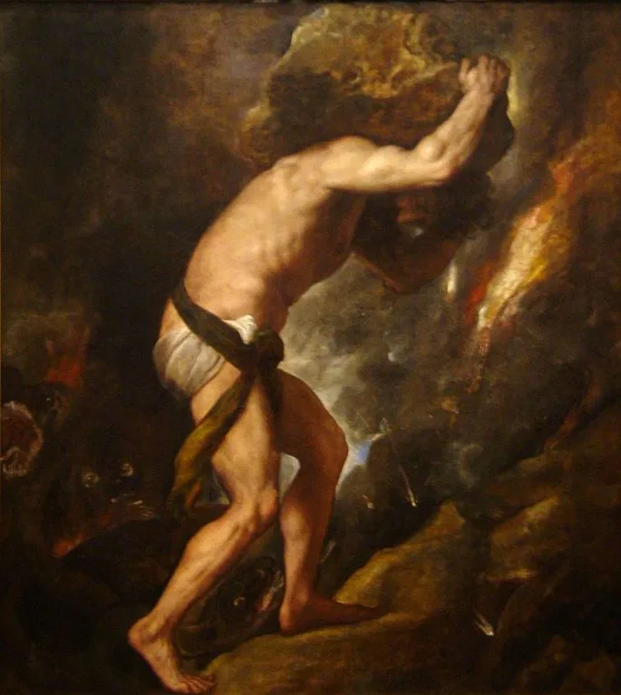
O rapto de Perséfone
Perséfone é filha de Zeus e de Deméter, a deusa da fertilidade e da colheita.
A princípio se chamava Cora e vivia sempre ao lado da mãe.
Uma tarde, ao sair para colher flores, Cora é raptada por Hades, o deus do submundo.
Ela então desce ao inferno e chegando lá come uma romã, o que significa que não poderia
mais voltar para a Terra.
Deméter sai pelo mundo a procura da filha e nesse tempo a humanidade viveu uma grande
estiagem, sem conseguir realizar boas colheitas.
Hélio, o deus sol, ao perceber a angústia de Deméter, lhe conta que ela fora levada
por Hades. Deméter então pede que o Hades a devolva, mas a garota já havia selado o
casamento através da ingestão da romã.
Entretanto, a terra não podia continuar infértil, então Zeus ordena que a moça passe
metade do tempo no submundo com o marido e a outra metade do tempo com a mãe.
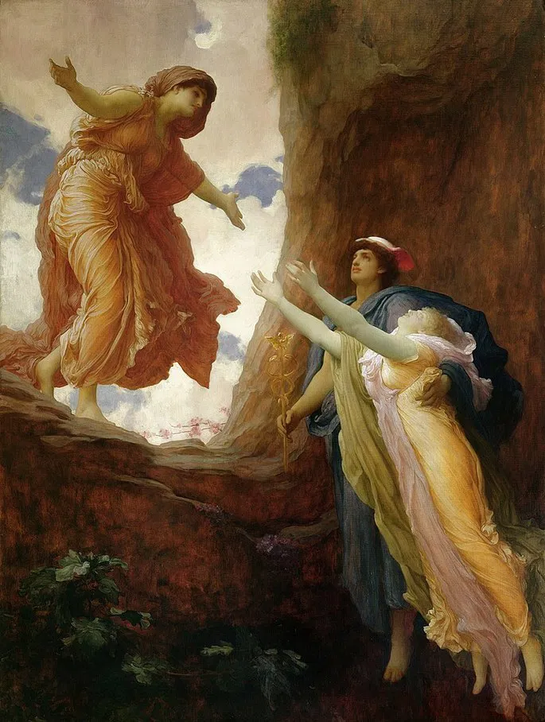
Origem da Medusa
No começo, Medusa era uma das mais belas sacerdotisas de Atena, a deusa da guerra justa.
A moça tinha os cabelos sedosos e brilhantes e era muito vaidosa.
Atena e Poseidon tinham uma rivalidade histórica, o que faz com o deus do mares decida
importunar Atena se aproximando de Medusa. Ele sabia que Atena era uma deusa virgem e que
impunha às suas seguidoras que também fossem.
Então Podeidon assedia Medusa e os dois têm relações no templo da deusa Atena. Ao saber
que haviam profanado seu templo sagrado, Atena se enfurece e lança um feitiço na sacerdotisa,
transformando-a em uma criatura horripilante com cabelos de serpentes. Além disso,
Medusa é condenada ao isolamento e não pode trocar olhares com ninguém, pois se assim
for as pessoas seriam transformadas em estátuas.
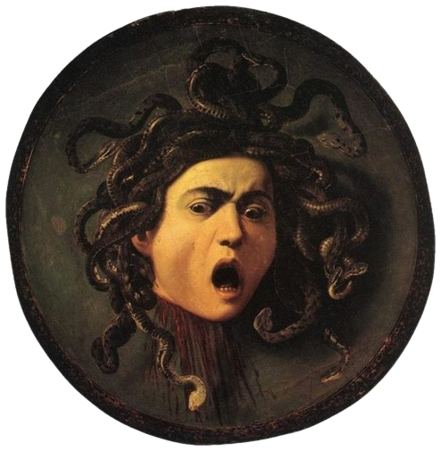
Doze trabalhos de Hercules
Os doze trabalhos de Hércules são um conjunto de tarefas que exigiam força e
destreza extraordinárias para serem feitos.
Hércules era um dos vários filhos de Zeus com uma mortal. Hera,
a esposa do deus, não tolerava as traições do marido e enviou serpentes para
matar a criança. Ma o garoto ainda bebê demonstrou sua força ao estrangular os animais
e sair ileso.
Assim, Hera ficou ainda mais furiosa e passou a perseguir o rapaz por toda a vida.
Um dia, Hércules teve uma crise de loucura provocada pela deusa e assassinou sua
esposa e seus filhos.
Arrependido, ele procura o oráculo de Delfos para saber o que fazer para se redimir.
O oráculo então lhe ordena que ele se entregue às ordens de Euristeu, rei de Micenas.
O soberano lhe ordena que cumpra doze tarefas dificílimas, enfrentando terríveis criaturas
São elas:
Pássaros do Lago Estínfalo
As cavalariças do Rei Aúgias
O Cinto da Rainha Hipólita
As Maçãs de Ouro das Hespérides
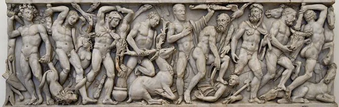
Eros e Psiquê
Eros, também conhecido como cupido, era o filho de Afrodite, a deusa do amor.
Um dia a deusa soube que existia uma mortal, Psiquê, tão bela quanto ela e que
os humanos estavam prestando homenagens à moça.
Essa jovem, apesar de bela, não conseguia se casar, pois os homens tinham medo de
sua beleza. Assim, a família da moça decide consultar o Oráculo de Delfos, que ordena
que ela seja colocada no alto de uma montanha e abandonada lá para que uma criatura
horrível a despose.
O triste destino da jovem havia sido tramado por Afrodite.
Mas seu filho Eros, ao ver Psiquê, imediatamente se apaixona por
ela e a salva.
Psiquê passa então a viver na companhia de Eros com a condição de que nunca veja seu rosto.
Mas a curiosidade toma a jovem e um dia ela quebra a promessa, olhando o rosto do amado.
Eros fica furioso e a abandona.
Psiquê, em depressão, vai até a própria deusa Afrodite pedir para reaver o amor de seus filho.
A deusa do amor ordena que a moça vá até o inferno pedir um pouco da beleza de Perséfone.
Ao retornar do submundo com a encomenda, Psiquê pode finalmente reencontrar seu amado.
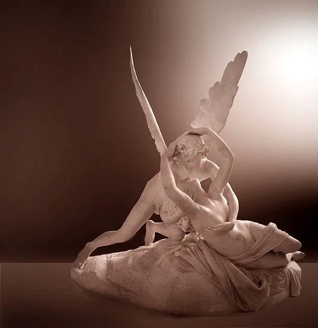
O Nascimento de Vênus
Vênus é o nome romano de Afrodite, a deusa do amor para os gregos.
A mitologia conta que a deusa nasceu no interior de uma concha.
Cronos, o tempo, era filho de Urano (o céu) e Gaia (a terra). Ele castrou
Urano e o membro amputado do pai caiu nas profundezas do oceano. Do contato das
espumas do mar com o órgão reprodutivo de Urano, foi gerada Afrodite.
Assim, a deusa emergiu das águas no corpo de uma mulher adulta de beleza estonteante.
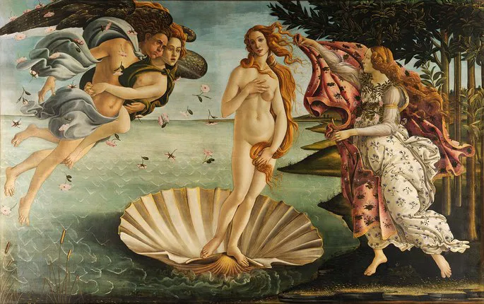
Guerra de Troia
A mitologia conta que a Guerra de Troia foi um grande conflito que envolveu diversos deuses,
heróis e mortais. Segundo a lenda, a origem da guerra se deu após o sequestro de Helena,
esposa do rei de Esparta, Menelau.
Páris, príncipe de Troia, raptou a rainha e a levou para seu reino. Assim, Agamenon, irmão de Menelau,
reuniu esforços para resgatá-la. Entre os heróis que partiram nessa missão estavam Aquiles, Ulisses,
Nestor e Ajax.
A guerra durou dez anos e foi vencida pelos gregos após a entrada de um enorme cavalo de madeira em território
inimigo que carregava em seu interior inúmeros soldados.
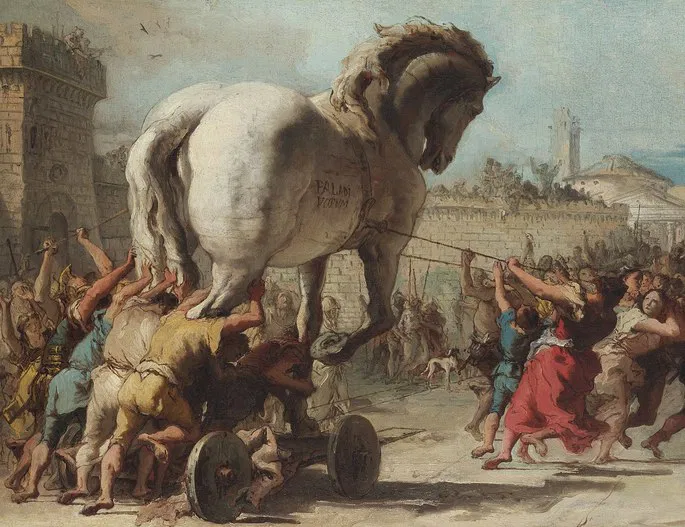
O mito de Narcísio
Quando Narciso nasceu, seus pais logo viram que se tratava de uma criança de inigualável beleza.
Percebendo que essa característica poderia causar problemas para o garoto, eles decidem consultar um vidente,
o profeta Tirésias.
O homem diz que Narciso viveria muitos anos, contanto que não visse sua própria imagem.
O menino cresce e desperta muitos amores, inclusive o de Eco.
Um dia, curioso por ver seu rosto, Narciso se inclinou em um lago e olhou para o reflexo de seu rosto.
Apaixonado por si mesmo, o jovem ficou fissurado por sua imagem e morreu de inanição.
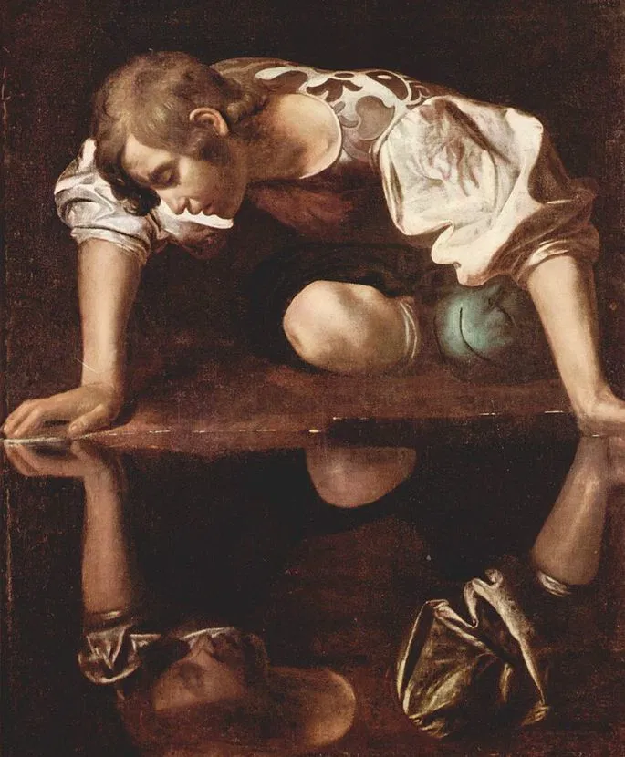
O mito de Aracne
Aracne era uma jovem tecelã muito talentosa e se vangloriava disso.
A deusa Atena também era uma exímia tecelã e bordadeira e ficou com ciúmes da
habilidade da mortal.
A divindade então foi até a moça e a desafiou para uma competição de bordado. Aracne aceitou o desafio.
Enquanto Atena retratava as lutas e conquistas dos deuses em seu bordado, Aracne desenhava com coloridos
fios as cruéis punições e crimes dos deuses contra as mulheres.
Com os trabalhos finalizados, era evidente a superioridade de Aracne. Atena, furiosa, destruiu o trabalho
da rival e a transformou em uma aranha, condenada a passar o resto dos dias pendurada fiando.
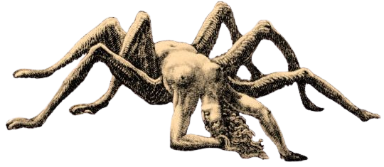
A queda de Ícaro
Ícaro era filho de Dédalo, habilidoso artesão. Os dois viviam na ilha de Creta e serviam ao rei Minos.
Um dia o rei se aborreceu com Dédalo após um projeto frustrado e encarcerou ele e seu filho.
Assim, Dédalo elabora um projeto de asas para eles com o objetivo de fugir da prisão. As asas
eram feitas com penas e cera e por isso não poderiam chegar muito perto do sol, pois derreteriam.
Então o pai alertou Ícaro para que não voasse nem muito baixo, próximo ao mar, nem muito alto, próximo ao sol.
Mas o garoto se empolgou com o par de asas e alcançou grande altitude. Sua asas se derreteram e
ele caiu ao mar.
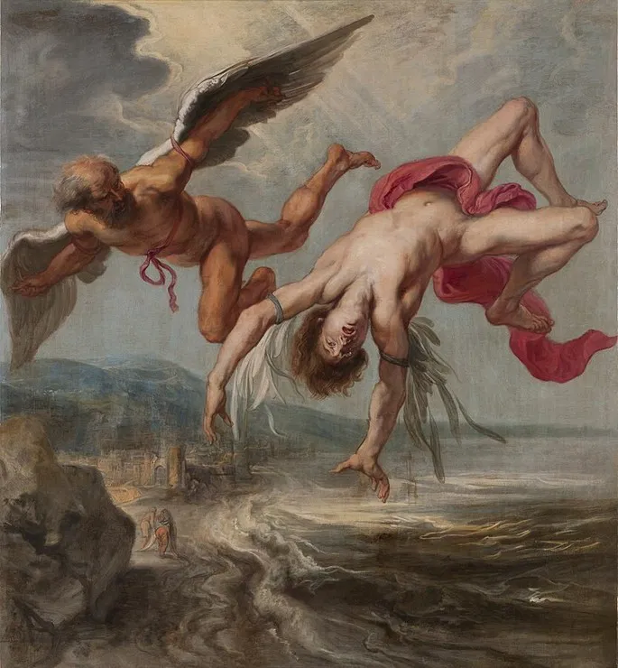
O fio de Ariadne (Teseu e Minotauro)
Ariadne era a bela filha do rei Minos, soberano de Creta. Na ilha havia sido construído por Dédalo
um grande labirinto para abrigar uma criatura terrível, o Minotauro, mistura de touro e monstro.
Muitos homens foram convocados para combater o Minotauro, mas morreram na empreitada. Um
dia chegou na ilha o herói Teseu para também buscar a façanha.
Ao ver o jovem, Ariadne se apaixona por ele e teme por sua vida. Ela então lhe oferece um
novelo de lã vermelha e recomenda que ele o desenrole ao longo do caminho, assim poderia
saber o caminho de volta após enfrentar a criatura.
Em troca, pede que o herói se case com ela. Assim é feito e Teseu consegue sair vitorioso do embate.
Entretanto, abandona a jovem, não se unindo à ela.
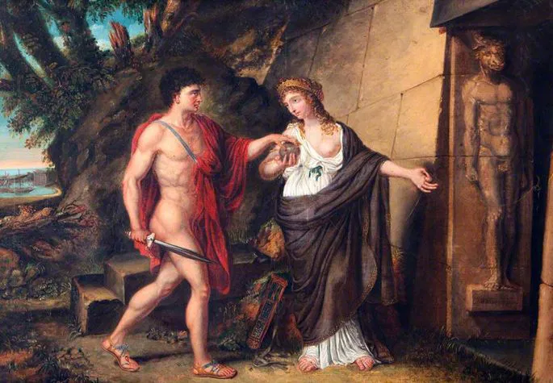